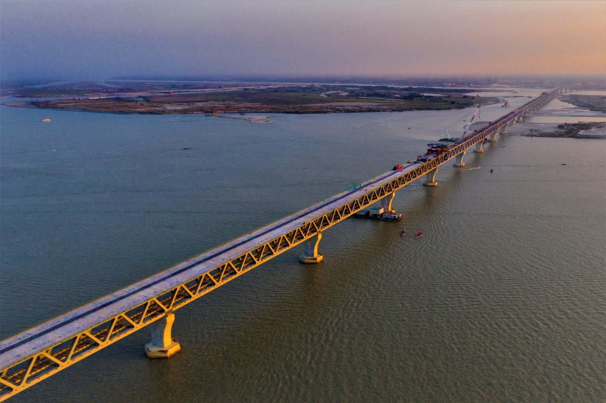

Padma Multipurpose Bridge awaits inauguration. It’s commonly known as the Padma Bridge (Bengali: পদ্মা সেতু), is a two-level road-rail bridge across the Padma River in Bangladesh. The multipurpose Padma Bridge opening Date is 25 June 2022 and that morning Prime Minister Sheikh Hasina inaugurated the bridge with white pigeon. The bridge, one of the largest in South Asia, will make it easier and more time-consuming for people in the south-southwestern districts of the country to travel with Dhaka. As a result of this bridge, the journey from Shariatpur, Madaripur, Gopalganj, Faridpur, and Narail to Dhaka will take 60 to 70 minutes. And this is why millions of people are bracing for new dreams, among them, there are many classes of businessmen and common people. Here today we are going to explore all details together some records made by the Padma Multipurpose Bridge and some important facts.
Records
The Padma River is a fast-flowing river and the Padma Bridge is built over it. In terms of water flow Padma River is second largest river in the world after Amazon River.
Piles have been laid on this bridge at a depth of 120 to 128 meters. It is rare in the construction history of bridges.
The second record is related to earthquake bearings. The capacity of ‘Fraction Pendulum Bearings’ on this bridge is 10,000 tons. In any other bridges there are no such bearings installed.
Facts
The full name of the 11th longest bridge in the world is ‘Padma Multipurpose Bridge’.
917 hectares of land had to be acquired for the construction of the bridge.
The multipurpose Padma Bridge construction company is China Major Bridge Engineering Company Limited.
Designer of Padma Bridge is the American multinational engineering firm AECOM.
Length of Padma Bridge is 6.15 kilometers (20,2000 feet).
Width 16.10 meters (59.4 feet).
Construction work started on December 6, 2014
The bridge is maintained by Bangladesh Bridge Authority and supervised by Korean Expressway and Bangladesh Army.
The nearest cantonment to the bridge is Padma cantonment.
On an average 75 thousand vehicles will run every day.
Earthquake tolerance level 9
The viaduct of the bridge is 3.16 km and there are 61 pillars. The total number of spans is 41.
Each span is 150 meters long and each span weighs 3,200 tons.
23.4460 degrees north and 90.2623 degrees east are the coordinates of Padma Bridge.
The height of this state-of-the-art bridge is 60 feet above the water level and its piling depth is 363 feet.
There will be a four-lane road on the upper floor of the bridge and a railway line on the ground floor.
The connecting road is Jajira and Mawa.
14 kilometers are the length of distance connecting road.
12 km river governance on the both bank of the river.
This bridge directly connected Lohajang of Munshiganj district to the Shariatpur and Madaripur districts.
Connection with 29 districts in the southwest will be expedited.
The total construction of the Padma Bridge cost is 30,193.39 Crore BDT.